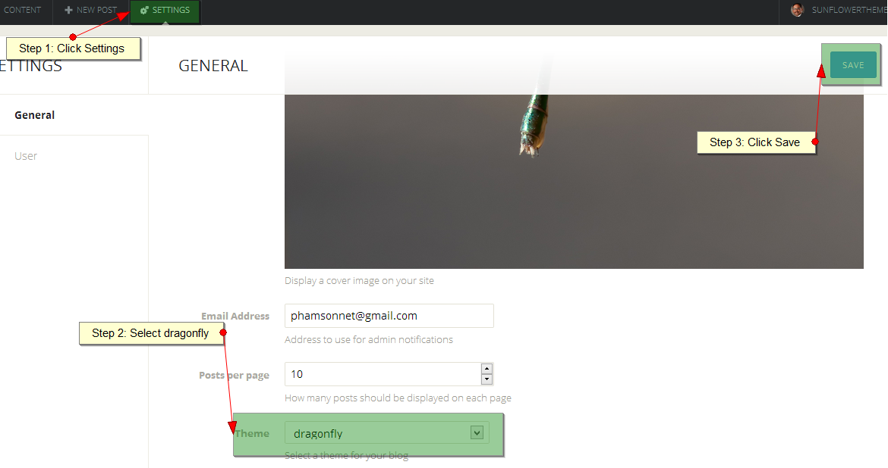
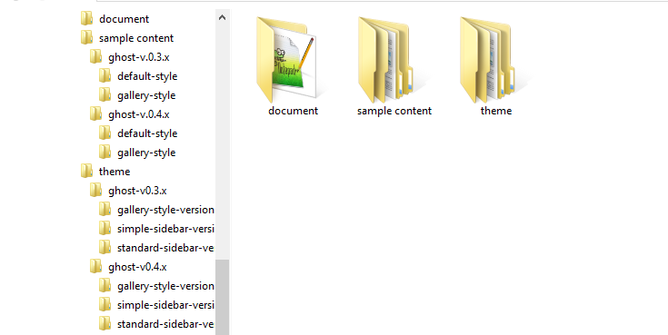
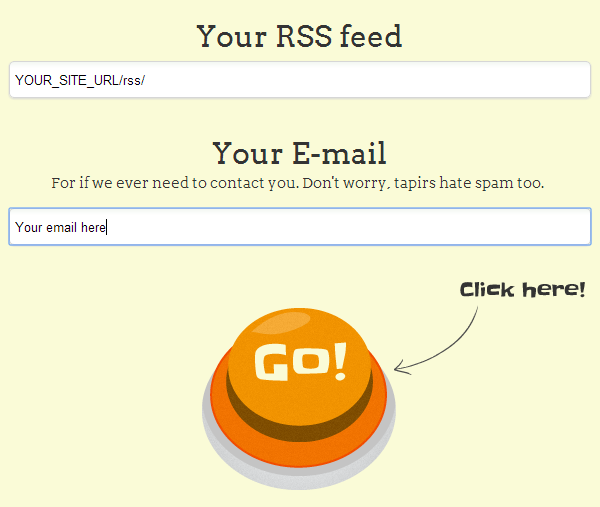

Thank you very much for purchasing my item.
If you have any issue or question that this document does not cover, you can contact us via profile page here. Thanks so much!
Table of Contents
1. Theme Version
Version number: 1.5.0
Date of release: 12/03/2014
2. Change Logs
= 12/03/2014 v1.5.0
==> Ghost 0.5.x compatible
==> Add Author Page
==> Optimize Grid Layout
==> Update Document
==> Remove old version
= 03/28/2014 v1.4
==> Ghost 0.4.2 compatible
==> Add Tag Page
= 03/04/2014 v1.4
==> Add Filter Control
==> Add Sort Control
==> Add Search
==> Add Custom Error Page
==> Add Page Snippets
==> Add Image Format, Drop Caps Format and more short-codes
==> Add Auto Format UI when browser resizing
==> Optimize Grid Layout
==> Update Document
= 02/18/2014 v1.3
==> Quick fix popup preview image issue
= 01/16/2014 v1.3
==> Quick fix make Blog Description as default intro text on sidebar
= 01/15/2014 v1.3
==> Quick fix for ghost install on folder
= 01/14/2014 v1.3
==> Add Ghost 0.4 compatible version
==> Add Featured Post Ribbon
==> Add Static pages support
==> Encode Post Title and Post Excerpt for social share button
==> Optimize: infinite scroll
==> Fix social share box
==> Update document
= 01/11/2014 v1.2
==> Add 3 Home Page Styles Option
==> 2 Sidebar Styles Option
==> Update document
= 12/30/2013 v1.1
==> Optimize: change default background color and Increase font size
==> Fix disqus comment issue: change link and content color
= 12/26/2013 v1.0.2
==> Fix UI issue
= 12/14/2013 v1.0.1
==> Fix responsive issue
= 12/11/2013 v1.0
==> Initial Release 1.0.0
3. Install
3.1: Unzip the main file you've downloaded from themeforest.net
3.2: Select version:
- Simple sidebar version: select folder theme/simple-sidebar-version/dragonfly
- Standard version: select folder theme/standard-version/dragonfly
- Gallery version: select folder theme/gallery-version/dragonfly
3.3: Install Theme
Hosted Ghost
Zip folder dragonfly and upload to your hosted control panel.
Other Host
Upload dragonfly folder to content/themes/ on ghost hosting folder.

Restart the service of ghost.
3.4 Login to your Ghost admin, click on the settings options. Select your Theme name in the 'Theme' options dropdown, save it and you are set up with the theme now.

Enjoy!
4. Getting to know the Theme
Once downloaded, unzip the compressed folder to see the structure of Theme. You'll see something like this:

4.1 Main Theme Structure
This theme has a fixed layout with a variety of column layouts depending on the page. This theme uses the 1200 grid system (12 columns) which will help streamline any customization you wish to make. If you're unfamiliar with the 1200 grid system, be sure to read about it here.
4.2 Css
All css file place in assets/css folder, contains:
- bootstrap.min.css - The main stylesheet that required for a basic theme styling like form, input, div, list element and etc.
- font-awesome.min.css- The stylesheet for font awesome.
- prettyPhoto.css - The stylesheet for jQuery Pretty Photo plugin.
- magnific-popup.css - The stylesheet for jQuery Magnific Popup plugin.
- colors.css - 15 colors defined for this theme.
- screen.css - The main stylesheet you are encouraged to modify.
- custom.css - The plain stylesheet that you can put your custom css.
The main CSS file (screen.css) contains all of the specific styling for the page. The file is separated into sections using:
/*================================================================*/ /* TABLE OF CONTENT 1. COMMON STYLE 2. SOCIAL NEXTWORK ICONS 3. SIDEBAR - CONTAINER 4. CONTENT 5. WIDGET 6. SHORT CODES 7. RESPONSIVE SETTING /* /*================================================================*/
If you would like to edit a specific section of the site, simply find the appropriate label in the css file, and then scroll down until you find the appropriate style that needs to be edited.
4.3 Javascript
All javascript file place in assets/js folder, contains:
- bootstrap.min.js - The Bootstrap Framework Javascript.
- jqBootstrapValidation.js- The jQuery Form Validation plugin.
- jquery.easing.1.3.js - The jQuery effect plugin.
- jquery.magnific-popup.min.js - The jQuery Magnific popup Plugin.
- jquery.fitvids.js - The jQuery Plugin auto fix width for videos.
- jquery.flickr.js - The jQuery Flickr plugin.
- jquery.infinitescroll.js - The jQuery Infinite Scroll plugin.
- jquery.instagram.js - The jQuery Instagram plugin.
- jquery.isotope.min.js - The jQuery Isotope plugin.
- jquery.prettyPhoto.js - The jQuery Pretty Photo plugin.
- jribbble.js - The jQuery Dribbble plugin.
- sscr.js - The Smooth scroll plugin.
- config.js - The Global Variables Define for Dragonfly.
- main.js - The main javascript for Dragonfly.
The main javascript (main.js) contains all of scripts for Dragonfly. The file is separated into sections using:
/*================================================================*/ /* TABLE OF CONTENT 1. Common function 2. Initialing */ /*================================================================*/
5. Setting Up The Theme
5.1 Change Theme color
If you would like to change the color for Theme,
open file assets/css/colors.css:
+ Comment all lines of import color css you don't use.
+ Uncomment line of import color css you want to uses.
Here is example, you want to use muted-teal color:
/*@import url(colors/default.css);*/ /*@import url(colors/sea-green.css);*/ /*@import url(colors/golden-rod.css);*/ /*@import url(colors/indian-red.css);*/ /*@import url(colors/dark-slate-gray.css);*/ /*@import url(colors/yellow.css);*/ /*@import url(colors/hot-pink.css);*/ /*@import url(colors/medium-violet-red.css);*/ /*@import url(colors/orange.css);*/ @import url(colors/muted-teal.css); /*@import url(colors/soft-green.css);*/ /*@import url(colors/corporate-blue.css);*/ /*@import url(colors/dodger-blue.css);*/ /*@import url(colors/green.css);*/
5.2 Change Font
We are using the google web font, if you would like to font for the Dragonfly, open file assets/css/screen.css, change google web font css url at line 1 and change font-family at line 5.
@import url(YOUR_GOOGLE_WEB_FONT_URL_HERE);
*, body {
font-family: YOUR_GOOGLE_FONT_NAME_HERE;
...................................
}
5.3 Change main background pattern
File: assets/css/main.css
.pattern{
background:YOUR_COLOR_CODE url('../img/YOUR_FILE_NAME_HERE') repeat;
}
5.4 Change Social Network Icons
In this section you can change Social Network Icons on the Left Sidebar
File: partials/main-sidebar.hbs
<ul class="social"> <li class="twitter"> <a href="#" target="_blank" title="Twitter"> <i class="fa fa-twitter"></i> </a> </li> <li class="facebook"> <a href="#" target="_blank" title="Facebook"> <i class="fa fa-facebook"></i> </a> </li> <li class="google"> <a href="#" target="_blank" title="Google"> <i class="fa fa-google-plus"></i> </a> </li> <li class="linkedin"> <a href="#" target="_blank" title="Linkedin"> <i class="fa fa-linkedin"></i> </a> </li> <li class="skype"> <a href="#" target="_blank" title="Skype"> <i class="fa fa-skype"></i> </a> </li> <li class="rss"> <a href="/rss/" target="_blank" title="Rss Feed"> <i class="fa fa-rss"></i> </a> </li> </ul>
How to find social icon? Template using the Font Awesome for social icon, check out this link http://fortawesome.github.io/Font-Awesome/icons/#brand for more info.
5.5 Menu Config (Apply for Ghost v0.4.x only)
Since Ghost v0.4.x you can create a post with option is Static Page and intergate to theme menu.
In this section you can Add/Edit Menu display on Left Sidebar
-
Step 1: Create a Static Page

-
Step 2: Intergate to Menu
Open File: partials/main-sidebar.hbs and follow the instruction below, if you use simple sidebar version.
<ul class="bottom-nav collapse navbar-collapse"> <!-- Begin menu item 1--> <li> <!-- 1. Change href: {{@blog.url}}/YOUR_STATIC_PAGE_URL_FROM_STEP_1/ Example: {{@blog.url}}/about-us/ 2. Change class="btn btn-theme content-popup" to class="btn btn-theme content-popup-ajax" If you want to display page content on Popup Change class="btn btn-theme content-popup" to class="btn btn-theme" If you want to display page content on standard page --> <a href="#about-us" class="btn btn-theme content-popup"> About Us <!-- Change Menu Text Here--> </a> </li> <!-- End menu item 1--> <!-- Begin menu item 2--> <li> <!-- 1. Change href: {{@blog.url}}/YOUR_STATIC_PAGE_URL_FROM_STEP_1/ Example: {{@blog.url}}/contact-us/ 2. Change class="btn btn-theme content-popup" to class="btn btn-theme content-popup-ajax" If you want to display page content on Popup Change class="btn btn-theme content-popup" to class="btn btn-theme" If you want to display page content on standard page --> <a href="#contact-us" class="btn btn-theme content-popup"> Contact Us <!-- Change Menu Text Here--> </a> </li> <!-- End menu item 2--> <!-- Begin menu item 3--> <li> <!-- 1. Change href: {{@blog.url}}/YOUR_STATIC_PAGE_URL_FROM_STEP_1/ Example: {{@blog.url}}/newsletter/ 2. Change class="btn btn-theme content-popup" to class="btn btn-theme content-popup-ajax" If you want to display page content on Popup Change class="btn btn-theme content-popup" to class="btn btn-theme" If you want to display page content on standard page --> <a href="#newsletter" class="btn btn-theme content-popup"> Newsletter <!-- Change Menu Text Here--> </a> </li> <!-- End menu item 3--> </ul>Open File: partials/main-sidebar-style2.hbs and follow the instruction below, if you use standard sidebar version.
<ul class="nav main-nav collapse navbar-collapse"> <!-- Begin menu item 1--> <li class="active"> <!-- Keep href="{{@blog.url}}" for home page--> <a href="{{@blog.url}}"> Home <!-- Change text of menu here--> </a> </li> <!-- End menu item 1--> <!-- Begin menu item 2--> <li> <!-- 1. Change href: {{@blog.url}}/YOUR_STATIC_PAGE_URL_FROM_STEP_1/ Example: {{@blog.url}}/about-us/ 2. Change class="content-popup" to class="content-popup-ajax" If you want to display page content on Popup Change class="content-popup" to class="" If you want to display page content on standard page --> <a href="#about-us" class="content-popup"> About Us <!-- Change text of menu here--> </a> </li> <!-- End menu item 2--> <!-- Begin menu item 3--> <li> <!-- 1. Change href: {{@blog.url}}/YOUR_STATIC_PAGE_URL_FROM_STEP_1/ Example: {{@blog.url}}/contact-us/ 2. Change class="content-popup" to class="content-popup-ajax" If you want to display page content on Popup Change class="" to class="" If you want to display page content on standard page --> <a href="#contact-us" class="content-popup"> Contact Us <!-- Change text of menu here--> </a> </li> <!-- End menu item 3--> <!-- Begin menu item 4--> <li> <!-- 1. Change href: {{@blog.url}}/YOUR_STATIC_PAGE_URL_FROM_STEP_1/ Example: {{@blog.url}}/newsletter/ 2. Change class="content-popup" to class="content-popup-ajax" If you want to display page content on Popup Change class="content-popup" to class="" If you want to display page content on standard page --> <a href="#newsletter" class="content-popup"> Newsletter <!-- Change text of menu here--> </a> </li> <!-- End menu item 4--> <!-- Begin menu item 5--> <li class="has-sub"> <!-- Keep href="#"--> <a href="#"> Another Menu <!-- Change text of menu here--> <span class="caret"></span> <!-- Keep this element --> </a> <ul class="dropdown-menu"> <!-- Begin sub menu item 1--> <li> <!-- 1. Change href: {{@blog.url}}/YOUR_STATIC_PAGE_URL_FROM_STEP_1/ Example: {{@blog.url}}/contact-us/ 2. Add class="content-popup-ajax" If you want to display page content on Popup --> <a href="#"> I'm child menu item <!-- Change text of sub menu here--> </a> </li> <!-- End sub menu item 1--> <!-- Begin sub menu item 2--> <li> <!-- 1. Change href: {{@blog.url}}/YOUR_STATIC_PAGE_URL_FROM_STEP_1/ Example: {{@blog.url}}/contact-us/ 2. Add class="content-popup-ajax" If you want to display page content on Popup --> <a href="#"> I'm child menu item <!-- Change text of sub menu here--> </a> </li> <!-- End sub menu item 2--> <!-- Begin sub menu item3--> <li> <!-- 1. Change href: {{@blog.url}}/YOUR_STATIC_PAGE_URL_FROM_STEP_1/ Example: {{@blog.url}}/contact-us/ 2. Add class="content-popup-ajax" If you want to display page content on Popup --> <a href="#"> I'm child menu item <!-- Change text of sub menu here--> </a> </li> <!-- End sub menu item 3--> </ul> </li> <!-- End menu item 5--> </ul>
5.6 Change Introdution Content
5.6.1 Simple Sidebar Version
In this section you can change introdution content display on Left Sidebar
File: partials/main-sidebar.hbs
<div class="intro"> <h5> We Are A </h5> <div class="group"> <h2> Complete </h2> <h3> Ghost Theme </h3> </div> <h4> For Your Site </h4> <p> You're in! Nice. We've put together a little post to introduce you to the Ghost editor and get you started. Go ahead and edit this post to get going and learn how it all works! Getting Started Writing in markdown is really easy. </p> </div>
5.6.2 Standard Sidebar Version
In this section you can change introdution content display on Left Sidebar
File: partials/main-sidebar-style2.hbs
<div class="intro"> <p> You're in! Nice. We've put together a little post to introduce you to the Ghost editor and get you started. Go ahead and edit this post to get going and learn how it all works! Getting Started Writing in markdown is really easy. </p> </div>
5.7 Change About Us Content
In this section you can change content display on the About Us Popup
File: partials/about-us.hbs
<div id="about-us" class="popup-container zoom-anim-dialog mfp-hide"> <h2>About Us</h2> <p> You're in! Nice. We've put together a little post to introduce you to the Ghost editor and get you started. Go ahead and edit this post to get going and learn how it all works! Getting Started Writing in markdown is really easy. </p> <p> This is dummy copy. It is not meant to be read. It has been placed here solely to demonstrate the look and feel of finished, typeset text. Only for show. He who searches for meaning here will be sorely disappointed. </p> </div>
5.8 Change Contact Us Content
In this section you can change your address, phone number and email display on the Contact Us Popup
File: partials/contact-us.hbs
<div id="contact-us" class="popup-container zoom-anim-dialog mfp-hide"> <h2>Contact Us</h2> <ul class="vcard"> <li> <span class="vcard-icon"><i class="fa fa-home"></i></span> <span class="vcard-text">677 Tan Son Street, Ho Chi Minh, VN</span> </li> <li> <span class="vcard-icon"><i class="fa fa-phone"></i></span> <span class="vcard-text">(+84) 909 53 6892</span> </li> <li> <span class="vcard-icon"><i class="fa fa-envelope"></i></span> <span class="vcard-text">info@yourdomain.com</span> </li> </ul> </div>
5.9 Config MailChimp Newsletter
In this section you can change the intro text (line 2) and mailchimp submit url (line 4) that use of MailChimp Newsletter Popup
File: partials/newsletter.hbs
<p> Sign up to receive email updates and to hear what's going on with me! </p> <form id="mc-form" action="YOUR_WEB_FORM_URL_HERE" method="post" novalidate="true"> <div class="input-group"> <input id="mc-email" type="email" name="EMAIL" placeholder="Email address" class="form-control" required > <span class="input-group-btn"> <button class="btn btn-default" type="submit">Subscribe</button> </span> </div> </form>
Check out this link for more detail about adding mailchimp form to your widget. Note: In this case you only need to copy web form action and change for YOUR_WEB_FORM_URL_HERE (line 7).
5.10 Config More Info Sidebar
In this section you can turn on / turn off any widget that uses on More Info Sidebar
File: partials/more-info-sidebar.hbs
{{!
In this file you can turn on/off sidebar that you want
+ Add ! to a ahead of > on each sidebar to turn off
+ Remove ! to turn on
}}
<aside id="more-info-sidebar">
{{!>widget-text}}
{{>widget-recent-posts}}
{{>widget-flickr}}
{{!>widget-dribbble}}
{{!>widget-instagram}}
{{>widget-tweets}}
{{!>widget-facebook-likebox}}
</aside>
5.11 Config Recent Posts Widget
In this section you can change the number of post item you want to display on the Recent Posts Widget.
File: partials/widget-recent-posts.hbs
<div class="recent-post" data-size="5" data-desc="true" data-pubdate="false" data-character-limit="100"> </div>
data-size: number of post item you want to display
data-desc: show post description
data-character-limit: limit number of characters for post description
data-pubdate: show publish date
5.12 Config Flickr widget
In this section you can change Flickr user id, change number of images you want to display on the Flickr Widget.
File: assets/js/config.js
var flickr_id='YOUR_FLICKR_ID_HERE';
File: partials/widget-flickr.hbs
<ul class="flickr-feed" data-mode="gallery" data-size="12" data-popup-preview="true"> </ul>
data-size: number of images you want to display
data-popup-preview: prettyPhoto plugin integration for preview image
How to find flickr id?
Use http://idgettr.com tool to find your Flickr user or group id. Just enter the address of your photostream or group pool and it'll find the number for you.
5.13 Instagram Widget
In this section you can change the Instagram user name, change number of images you want to display on the Instagram Widget.
File: assets/js/config.js
var instagram_accessToken='your-instagram-access-token'; // change [your-instagram-access-token] here var instagram_clientID='your-instagram-application-clientID'; // change [your-instagram-application-clientID] here
File: partials/widget-instagram.hbs
<ul class="instagram-feed" data-mode="gallery" data-display="12" data-popup-preview="true"> </ul>
data-display: number of images you want to display
data-popup-preview: prettyPhoto plugin integration for preview image
How to find Access Token and ClientID?
Check out this link for more detail
5.14 Enable Home Meta Post
File: index.hbs at line 13
<div class="wrap">
<h2 class="post-title"><a href="{{url}}">{{{title}}}</a></h2>
<div class="post-excerpt">
{{content words="0"}} {{excerpt}} ... <a class="read-more" href="{{url}}">Read more »</a>
</div>
{{>home-meta-post}}
</div>
If you want to Disable Home Meta Post just change line 13 to {{!>home-meta-post}}
5.15 Comment System Config
5.15.1 Disqis Comment (Default config in your download)
By Default, this theme supports comments supplied by Disqus (http://disqus.com). For assistance in setting up your own Disqus account and customizing it for your needs, please see the Disqus QuickStart Guide: http://help.disqus.com/customer/portal/articles/466182-quick-start-guide
Change content in files below to turn on Disqis Comment
File: partials/comment-config.hbs
{{!>googleplus-comment-config}}
{{!>facebook-comment-config}}
{{>disqus-comment-config}}
File: partials/disqus-comment-form.hbs, replace YOUR_DISQUS_SHORTNAME with your Disqis shortname.
<script type="text/javascript">
var disqus_shortname = 'YOUR_DISQUS_SHORTNAME';
/* * * DON'T EDIT BELOW THIS LINE * * */
(function() {
var dsq = document.createElement('script'); dsq.type = 'text/javascript'; dsq.async = true;
dsq.src = '//' + disqus_shortname + '.disqus.com/embed.js';
(document.getElementsByTagName('head')[0] || document.getElementsByTagName('body')[0]).appendChild(dsq);
})();
</script>
If you have enabled Home Post Meta, please follow above.
File: partials/home-meta-post.hbs
<span class="comment pull-right">
{{!>facebook-comment-count}}
{{!>googleplus-comment-count}}
{{>disqus-comment-count}}
</span>
Next, you will need a Disqis Application API PublicKey, check out this link to register Disqis Application API.
File: partials/disqus-comment-config.hbs, replace YOUR_DISQUS_SHORTNAME with your Disqis shortname and replace YOUR_DISQUS_APP_API_PUBLIC_KEY with your Public Key.
<script> var disqusPublicKey = "YOUR_DISQUS_APP_API_PUBLIC_KEY"; var disqusShortname = "YOUR_DISQUS_SHORTNAME"; // Replace with your own shortname </script>
5.15.2 Facebook Comment
Change content in files below to turn on Facebook Comment
File: partials/comment-config.hbs
{{!>googleplus-comment-config}}
{{>facebook-comment-config}}
{{!>disqus-comment-config}}
You will need a Facebook Application ID, check out this link to register Facebook Application.
File: partials/facebook-comment-config.hbs, replace YOUR_APP_ID with your Facebook Application ID.
<script>
(function(d, s, id) {
var js, fjs = d.getElementsByTagName(s)[0];
if (d.getElementById(id)) return;
js = d.createElement(s); js.id = id;
js.src = "//connect.facebook.net/en_US/all.js#xfbml=1&appId=YOUR_APP_ID";
fjs.parentNode.insertBefore(js, fjs);
}(document, 'script', 'facebook-jssdk'));
</script>
If you have enabled Home Post Meta, please follow above.
File: partials/home-meta-post.hbs
<span class="comment pull-right">
{{>facebook-comment-count}}
{{!>googleplus-comment-count}}
{{!>disqus-comment-count}}
</span>
5.15.3 Google Plus Comment
Change content in files below to turn on Google Plus Comment
File: partials/comment-config.hbs
{{>googleplus-comment-config}}
{{!>facebook-comment-config}}
{{!>disqus-comment-config}}
If you have enabled Home Post Meta, please follow above.
File: partials/home-meta-post.hbs
<span class="comment pull-right">
{{!>facebook-comment-count}}
{{>googleplus-comment-count}}
{{!>disqus-comment-count}}
</span>
5.16 Config Filter And Sort
In this section you can Turn On/Turn Off Filter And Sort display on home page
File: index.hbs
{{>filter-control}} {{! Each post will be output using this markup }}
Change line 5 to {{!>filter-control}} to Turn Off and change to {{>filter-control}} to Turn On.
5.17 Config Search
Dragonfly use Tapir API for search. To use it, you just need a tapir Token.
Step 1: Click here to get a Token.

Step 2: Open file assets/js/config.js, at line 7
var tapir_token = '5310b34770fda80200000009'; //<- Change your token here
5.18 Config Google Map
From version 1.4 dragonfly support gmap in your post/page. To use it, you just need a map latitude and map longitude
Open file assets/js/config.js, at line 9-10
var your_latitude = 10.839776; // Your map latitude var your_longitude = 106.647159; // Your map longitude
6. Writing Posts
There are some notes when you write posts:
+ Put image () in the top of post and upload image for image thumbnail post type
+ Put soundcloud embed code in the top of post for audio post type. Example:
<iframe height="166" src="https://w.soundcloud.com/player/?url=https://api.soundcloud.com/tracks/104708200"></iframe>
+ Put youtube embed code in the top of post for youtube video post type. Example:
<iframe width="560" height="315" src="//www.youtube.com/embed/aeLTx-ZhlFQ"></iframe>
+ Put vimeo embed code in the top of post for vimeo video post type. Example:
<iframe src="//player.vimeo.com/video/77270043" width="500" height="281"></iframe>
* Working on Thumbnail Image Ratio for Gallery Style Version
- + Put image () for thumbnail image with ratio 1x2 (1 col and 2 rows)
- + Put image () for thumbnail image with ratio 1x2 (2 cols and 2 rows)
- + Put image () for thumbnail image with ratio 1x2 (2 cols and 1 rows)
- + Put image () for thumbnail image with ratio 1x2 (3 cols and 1 rows)
- + You can apply these case for other ratio
7. Using Shortcodes
At present Dragonfly only support html shortcode from BootStrap Framework. Check out this link, copy short code and paste to post content area.
8. Custom Theme
File: assets/css/custom.css
Add your custom styles here instead of screen.css so it is easier to update your theme. Simply copy an existing style from screen.css to this file, and modify it to your liking.
9. Update
File changes:
= [Modify] index.hbs = [Add] author.hbs = [Modify] tag.hbs = [Modify] post.hbs = [Modify] page.hbs = [Modify] partials/pagination.hbs = [Modify] assets/css/screen.css = [Modify] assets/js/main.js = [Modify] assets/js/sscr.js
9.1 Backup all old files
9.2 Upload:
Upload with overwite option all file above from your download package to your theme folder
9.3 Re-config comment system:
Re-config comment system at section 5.15
We tread on the heels of Ghost. If you need any extra or feature just email us and we will include it in the next update.
10. Credits
10.1 Javascript
Dragonfly uses several scripts many of which are documented within the theme's code. If you're a developer, you will find this particularly useful.
10.2 Images
Images showed on preview files are from pixabay.com and subtlepatterns.com. Being designed with multipurpose attitude in mind, we showed some images on our preview files so you can have an idea what can be accomplished. Not a single image file is included with the download, they were just for demo purposes due to copyright.
10.3 Fonts
- Google Fonts - http://www.google.com/webfonts
- Font Awesome - http://fortawesome.github.com/Font-Awesome/
Once again, thank you so much for purchasing this theme. As I said at the beginning, I'd be glad to help you if you have any questions relating to this theme. Please contact me via email or social media. I'll do my best to assist!